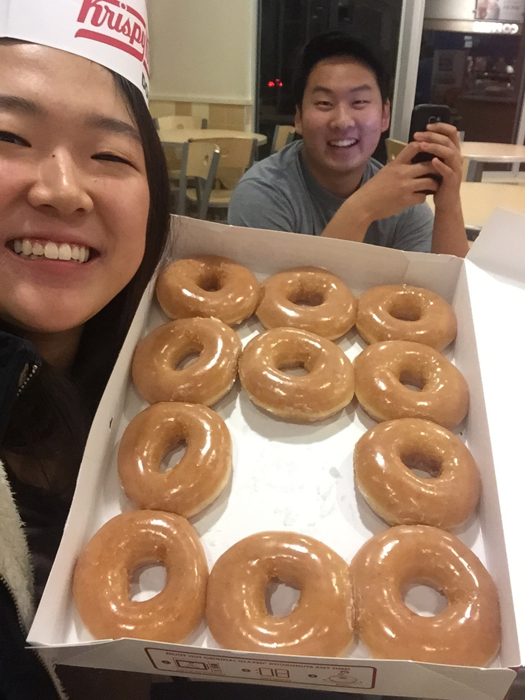

Do you remember the first time we met? I don't exactly remember the first time... but I rememeber one of the first times I met you was at Rice. I had went to the gym and Hana told me to stop by. I had no idea you were there. But you bought us wings and I probably thought who is this third year scheming on all these girls? LOL We had a nice conversation and I think that I thought you were a cool dude. Thanks for the first Wings Over I ever had. Actually, thinking about it, do you remember when you hit a car or something while parking? I remember I was with Andy, and we saw you at Alderman parking lot, and Andy was making fun of you for bumping a car. haha that was kinda funny

Do you remember that night when you invited Heamin and I to your house? We baked cookies and discussed whatever the heck a hymen was... LOL I was kinda scarred that night cuz Tyler kept looking up pictures... but I think that was the first time I ever went over to your place. Who knew I'd be Tyler's new roommate? Do you remember when we went to the movies for the first time? I think we saw hunger games with Hana and Andy and Anthony. (shoutout to Anthony for setting this whole thing up and teaching me how to code... It is quite fun hehe) I was so excited to see it, I think I dragged you guys to watch it. Do you remember that one night I spent all night studying at your place? You probably won't remember this one cuz I think you were kinda tired. I was coming back to my dorm from my volunteering shift and it was like a quarter past midnight. I was walking up those stairs of death at Dillard (do you remmeber you hated those stairs). You called and asked me if I wanted to study with Hana and Stephen at your place. Man, now that I think about it, Hana used to hang out with us a lot. Remember when you told me that you were close with all of us in our family except for Brenda? lol I thought it was only natural that we would be close then. But I remember you made Hana drive your car to pick me up. You made us ramen and we "studied" for hours.
Do you remember your car? My car? How did we have the exact same car? You let me drive your car one time and I felt like I was driving my own car. I miss that car. Do you remember when you asked me to take teaching as a profession? I don't think it took much convincing for me to enroll in that class. But I knew that I was taking motor development, and when you told me that you might be taking that class as well, I was really excited! Who knew that those classes would change my entire Spring semester... Also, do you remember finals week? Everyone was "studying" at PLSB. You asked me if I wanted to go to cookout. I think I said I couldn't cuz I had to study. But I asked you to bring me a corndog, half as a joke. But you actually had brought me one! With honey mustard! The honey mustard definitely sealed the deal I think LOL
Spring Semester was kinda crazy. Do you remember we had motor and teaching? I can't believe you convinced me to take them... My Tuesdays and Thursdays were filled with you :) Those 2 hour blocks in between were easy because I remember we would go find new places in Ruffner to crash. Needless to say, I didn't get much studying in between those classes, but I had fun.
Then one day, we were talking about Richmond, and then we decided to go? We ate pho and brought home some Krispi Kreme. I remember going to prayer meeting right after and Sabrina noticing our boxes of donuts. haha I made you wear the Krispi Kreme hat, and you took it home. Thanks for that day

There was one day I was at Clark, and you came over to the right side to sit with me. And then Eunice Kim came too and we talked for like 3 hours probably that night. We were going through Myers-Briggs personalities and we were discussing who you would be compatible and what not. It said that we were compatible and I thought that it made sense. Remember that one time I told you
that if I had a brother I feel like it would be someone like you? I thought that we had a lot of similarities, and maybe that was why it was so easy to be with you. Do you remember that one time at Rice? We always joked that we never had serious talks, but I remember I sort of opened up and told you about how I am and stuff. Thanks for listening. "We can change!" lol remember that?
I told myself and everyone else too that you were asexual or whatever haha I thought I had everyone convinced and even myself maybe. You told me that Hwa and Eunice thought that they thought that you actually don't even look at girls like that. But you said that you didn't and I thought that maybe... just maybe you weren't a complete robot...
Do you remember our beach trip? We had just taken our Motor final and I was probably full of adrenaline for getting my first 100 on a test haha But I think we had so much fun and so many memories because you were so spontaneous. I can't believe you just said yes to going to the beach. The 4 hour drive flew by... I think we probably stayed on the actual beach for like 15 minutes.
But it was fun running around and being dumb. I think that's when I finally kind of saw it in us that something could be up. Why it took us that long and that far away from home to figure it out, I'll never know. I think it always takes me long to figure these things out, but I think it takes you even longer LOL We're probably the slowest people to come together... and we're probably doing everything wrong
but it doesn't feel very wrong. Do you remember we went to Popeyes and they didn't have cole slaw? And then we drove all the way to a KFC to get cole slaw, but you didn't even like that one... That's how the cole slaw thing started haha The drive back was kinda scary... we almost got lost cuz we ran out of gas. You were thinking about calling Tyler. Sorry I might've made things confusing when I said that
maybe we shouldn't hang out too much. People were catching on, and I guess I started to notice. But I still wanted to hang out with you and stuff. So I'm glad I asked you to eat with me and Runk and I'm glad that you came.
Do you remember Dave Matthew's Band had their 25th anniversary concert? You were leaving that day to go back to home, and we ate at chipotle. For some reason I felt sick that day... Of course I had no idea what was gonna happen but isn't it funny? It must have made you anxious LOL I was studying at Clark but you suddenly just asked to talk real quick. And honestly at that moment my heart
sank. I don't think I knew exactly what was gonna happen, but I remember I was super nervous. Do you remember that I still had finals left... But you took me to that table outside of rising roll. Do you know you never exactly asked me out... I didn't know how to respond to you when you said all that haha
CLICK HERE